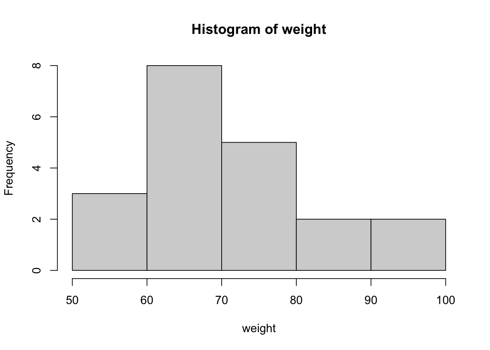
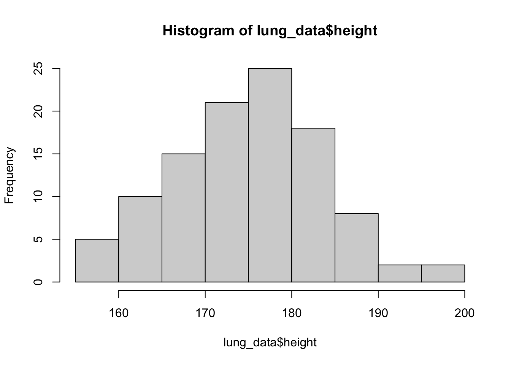
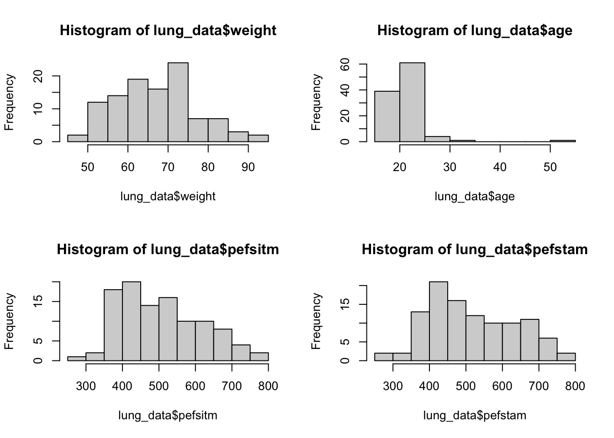
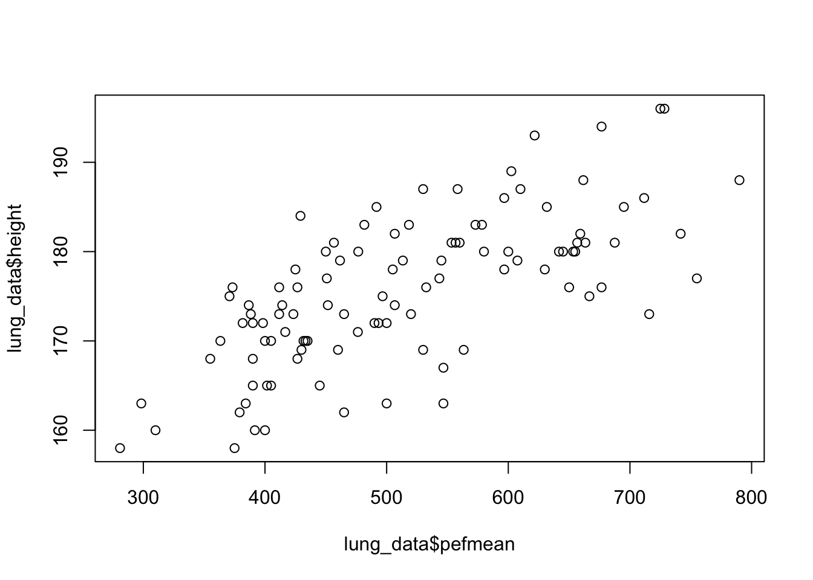

weight <- c(50, 75, 70, 74, 95,
83, 65, 94, 66, 65,
65, 75, 84, 55, 73,
68, 72, 67, 53, 65)Exploratory data analysis (Part I)
Exploring a dataset, basic data manipulation, descriptive statistics
Might be useful to have an outline and study goals
Data structure (use penguins_mini data as example)
Bec student background, it is not necessary to go into too much details
MUST: concept of scalar, vector, matrix and data frame (dataset exploration put to descriptive and eda)
MUST: numeric, factor, character, logical
Exploring a dataset
head()
View()
str()
colnames()
dim()
nrow(), ncol()
length() of a vector
Basic data manipulation
only cover base R here; if needed, tidyverse put to eda
by index, [row, col]
Descriptive statistics
min, max, median
IQR
summary table () of a categorical vector
Visualisation (only intro, details later)
focus on baseR solutions
Examples (exercises with solution)
Exercise 1 (weight)
1a
Generate a variable named weight, with the following measurements:
50 75 70 74 95 83 65 94 66 65 65 75 84 55 73 68 72 67 53 651b
Make a simple descriptive analysis of the variable, what are the mean, median, maximum, minimum and quantiles?
How to interpret the data?
mean(weight)[1] 70.7median(weight)[1] 69max(weight)[1] 95min(weight)[1] 50# alternatively,
summary(weight) Min. 1st Qu. Median Mean 3rd Qu. Max.
50.0 65.0 69.0 70.7 75.0 95.0 1c
Make a histogram.
hist(weight)
1d
Make a boxplot. What do the two dots on the top represent?
boxplot(weight)
Exercise 2 (lung function)
Lung function has been measured on 106 medical students. Peak expiratory flow rate (PEF, measured in liters per minute) was measured three times in a sittinng position, and three times in a standing position.
The variables are
- Age (years)
- Gender (1 is female, 2 is male)
- Height (cm)
- Weight (kg)
- PEF measured three times in a sitting position (pefsit1, pefsit2, pefsit3)
- PEF measured three times in a standing position (pefsta1, pefsta2, pefsta3)
- Mean of the three measurements made in a sitting position (pefsitm)
- Mean of the three measurements made in a standing position (pefstam)
- Mean of all six PEF values (pefmean)
2a)
Download and open PEFH98-english.dta into R.
If you have problem with .dta data format, you can also use PEFH98-english.csv.
Pay attention to how gender is coded. We might have to modify it.
# locate your datafile, set the path to your data
lung_data <- haven::read_dta('data/PEFH98-english.dta')
head(lung_data)# A tibble: 6 × 13
age gender height weight pefsit1 pefsit2 pefsit3 pefsta1 pefsta2 pefsta3
<dbl> <dbl+lbl> <dbl> <dbl> <dbl> <dbl> <dbl> <dbl> <dbl> <dbl>
1 20 1 [female] 165 50 400 400 410 410 410 400
2 20 2 [male] 185 75 480 460 510 520 500 480
3 21 2 [male] 178 70 490 540 560 470 500 470
4 21 2 [male] 179 74 520 530 540 480 510 500
5 20 2 [male] 196 95 740 750 750 700 710 700
6 20 2 [male] 189 83 600 575 600 600 600 640
# ℹ 3 more variables: pefsitm <dbl>, pefstam <dbl>, pefmean <dbl># gender is coded as 1 and 2, but it looks like it's not a category but a 'double' (number)
# we code it explicitly fo readability
lung_data$gender <- factor(lung_data$gender,
levels = c('1','2'),
labels = c('female','male'))
head(lung_data)# A tibble: 6 × 13
age gender height weight pefsit1 pefsit2 pefsit3 pefsta1 pefsta2 pefsta3
<dbl> <fct> <dbl> <dbl> <dbl> <dbl> <dbl> <dbl> <dbl> <dbl>
1 20 female 165 50 400 400 410 410 410 400
2 20 male 185 75 480 460 510 520 500 480
3 21 male 178 70 490 540 560 470 500 470
4 21 male 179 74 520 530 540 480 510 500
5 20 male 196 95 740 750 750 700 710 700
6 20 male 189 83 600 575 600 600 600 640
# ℹ 3 more variables: pefsitm <dbl>, pefstam <dbl>, pefmean <dbl>2b)
How many observations are there (number of subjects)? How do you get a list of variable names from your dataset?
nrow(lung_data)[1] 106colnames(lung_data) [1] "age" "gender" "height" "weight" "pefsit1" "pefsit2" "pefsit3"
[8] "pefsta1" "pefsta2" "pefsta3" "pefsitm" "pefstam" "pefmean"Make a histogram for each of the following variables. Compute means, and interpret the results.
height
weight
age
pefsitm
pefstamhist(lung_data$height)
We repeat it for the other 4 variables. We can put them more compactly,
par(mfrow = c(2, 2))
# we use this line to display (2 rows 2 columns)
# by default it is 1 row 1 column
# run this line to set it back to default:
# par(mfrow = c(1, 1))
hist(lung_data$weight)
hist(lung_data$age)
hist(lung_data$pefsitm)
hist(lung_data$pefstam)
2c)
Make histograms for the variables height and pefmean for men and women separately. Also try to make boxplots.
What conclusion can you draw?
height_f <- lung_data$height[lung_data$gender == 'female']
height_m <- lung_data$height[lung_data$gender == 'male']
par(mfrow = c(1,2)) # plot in parallel
hist(height_f)
hist(height_m)
# we can make it more customized
# add axis limit, title and xaxis name
par(mfrow = c(1,2)) # plot in parallel
hist(height_f, main = 'Height: female', xlab = 'Height (cm)',
xlim = c(150, 200))
hist(height_m, main = 'Height: male', xlab = 'Height (cm)',
xlim = c(150, 200))
Similarly, histogram for pefmean can be done in the same way.
pefmean_f <- lung_data$pefmean[lung_data$gender == 'female']
pefmean_m <- lung_data$pefmean[lung_data$gender == 'male']
par(mfrow = c(1,2)) # plot in parallel
hist(pefmean_f)
hist(pefmean_m)
Now we can make some boxplots
par(mfrow = c(1, 2))
boxplot(height ~ gender, data = lung_data, main = 'Height vs Gender')
# it is also possible to remove the frame
boxplot(pefmean ~ gender, data = lung_data, frame = F, main = 'PEFmean vs gender')2d)
Make three scatterplots to compare
pefmeanwithheightpefmeanwithweightpefmeanwithage
What association do you see?
# pefmean height
plot(lung_data$pefmean, lung_data$height)
# it is possible to customize
plot(lung_data$pefmean, lung_data$height,
main = 'PEF mean vs height',
xlab = 'PEF mean', ylab = 'Height',
pch = 20)# pch: plotting symbolspch = 20 is setting the symbol to small solid dots. You can try different values, from 0 to 25. Read more
par(mfrow = c(1, 2))
# pefmean weight
plot(lung_data$pefmean, lung_data$weight,
main = 'PEF mean vs weight',
xlab = 'PEF mean', ylab = 'Weight',
pch = 20)
# pefmean age
plot(lung_data$pefmean, lung_data$age,
main = 'PEF mean vs age',
xlab = 'PEF mean', ylab = 'Age',
pch = 20)